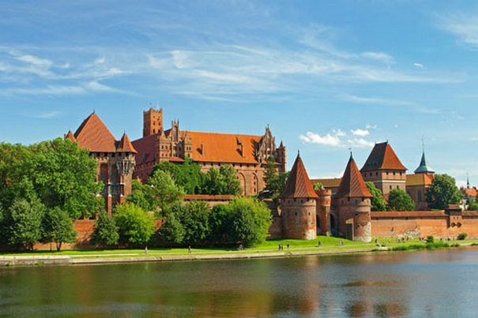

ZAMEK KRZYŻACKI W MALBORKU

XIII-wieczny, warowny klasztor Zakonu Krzyżackiego został znacznie rozbudowany i upiększony po 1309 roku, kiedy przeniesiono tu z Wenecji siedzibę Wielkiego Mistrza. Ten znakomity przykład średniowiecznego zamku ceglanego popadł następnie w ruinę, ale został pieczołowicie odrestaurowany na przełomie XIX i XX w. To właśnie w Malborku powstało wiele obowiązujących dzisiaj technik konserwatorskich. Po poważnych zniszczeniach w czasie II Wojny Światowej, zamek został ponownie odrestaurowany na podstawie szczegółowej dokumentacji opracowanej przez jego wcześniejszych konserwatorów.